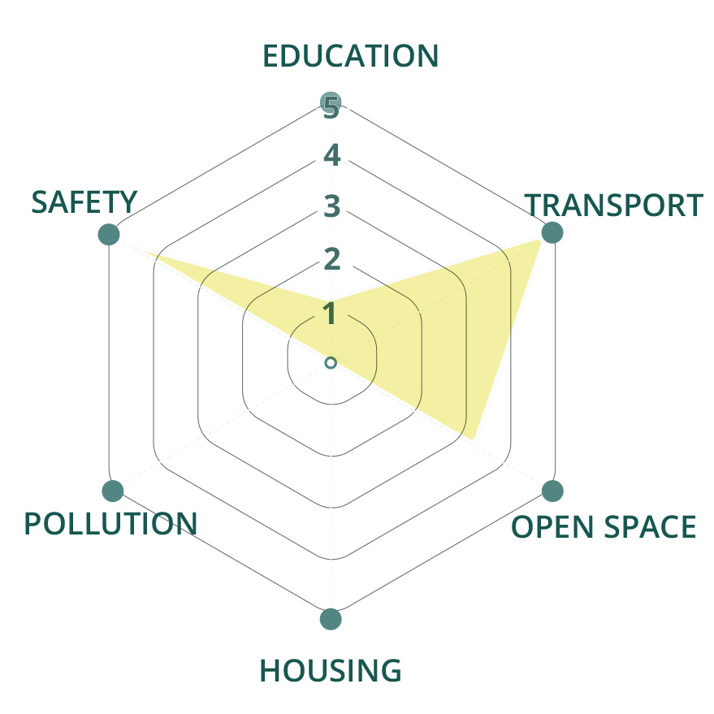
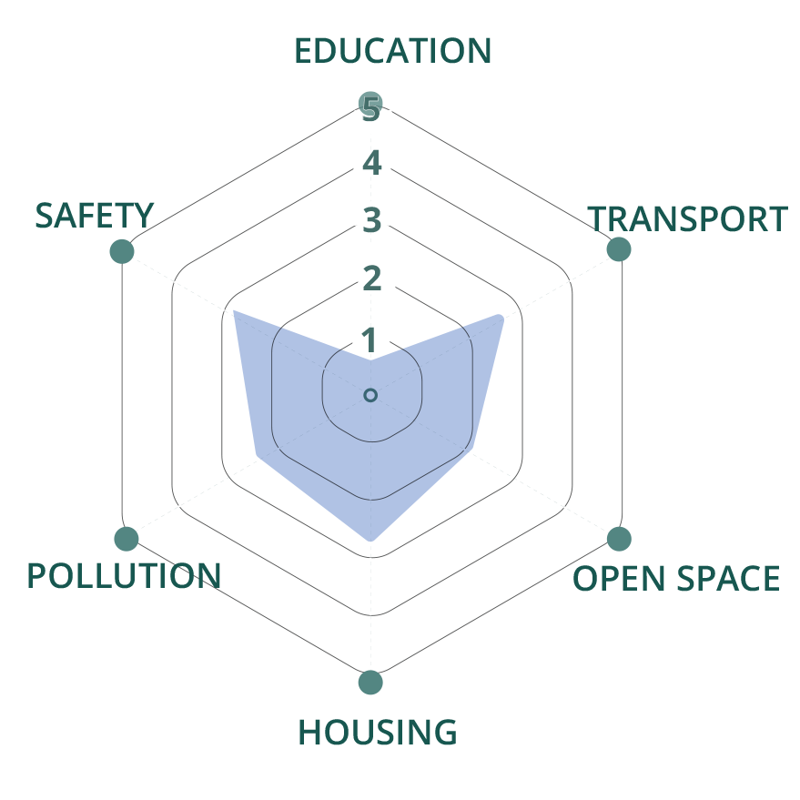
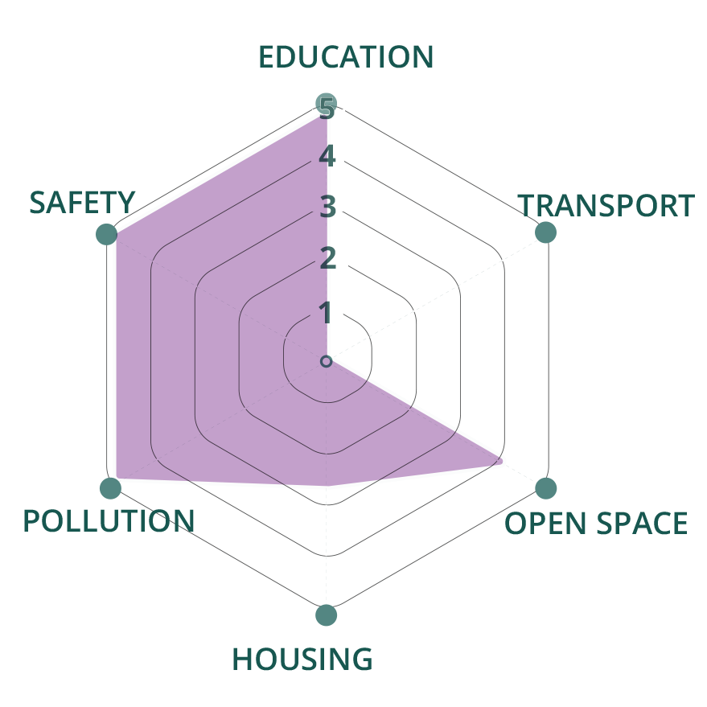
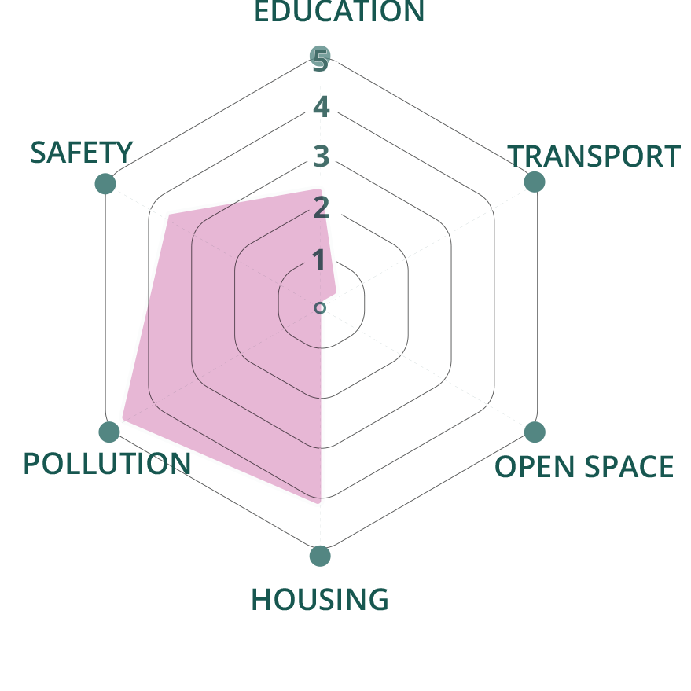
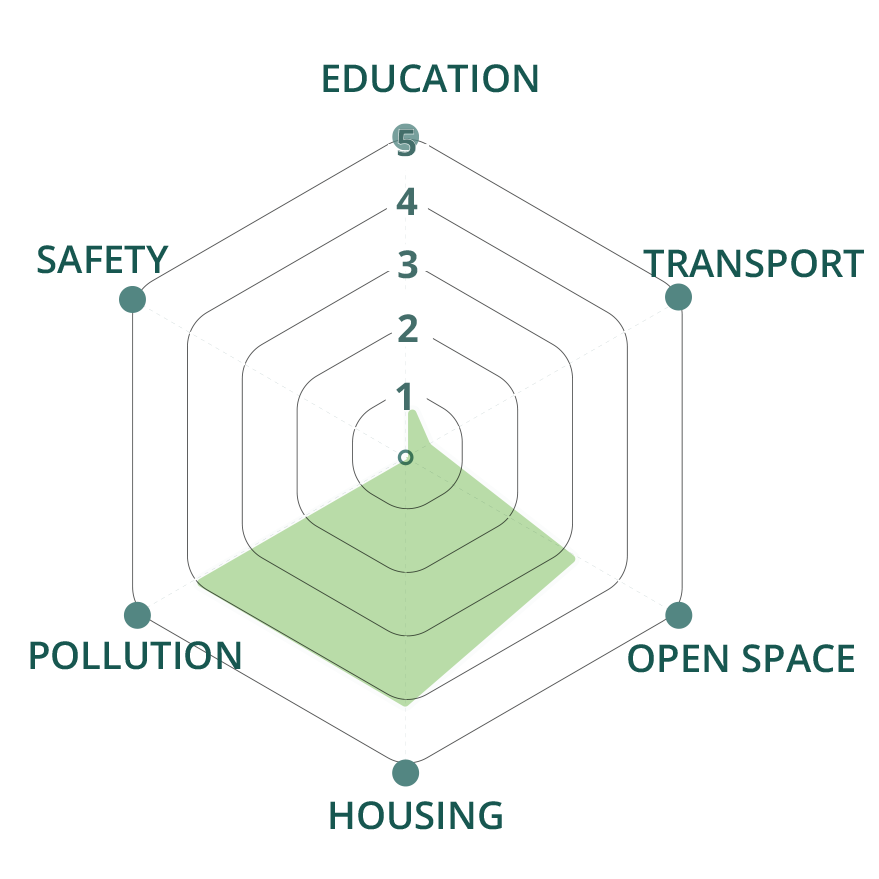
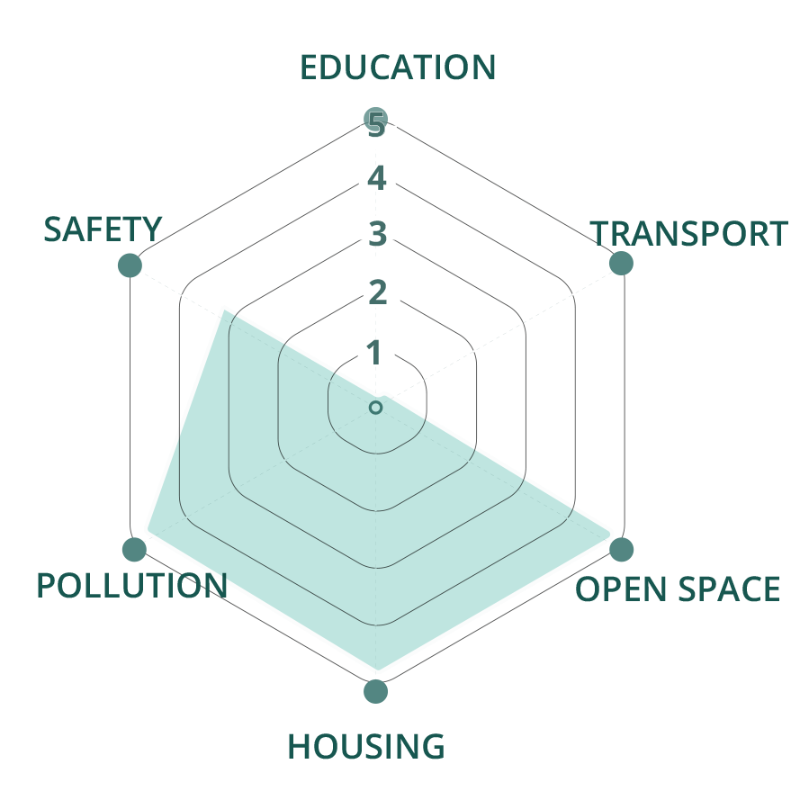

Liveable London
Finding the ideal neighbourhood for you
Scroll
▼
Exploring the spatial distribution of neighbourhood typologies in London through an interactive mapping tool
Every year, 200,000 people move from different parts of the UK to live in London. On top of this, people from across the world choose to make London their home too. Whether it be for work, education, business or living closer to family and friends, it is undeniable that London offers a plethora of opportunities and reasons to relocate for diverse groups of people.
The myriad of options presented by London can be captivating, yet daunting at the same time. When residing at a smaller city or town, choosing where to live could be considered something easy and straightforward. Nevertheless, for a city like London this task can be quite exhausting given that it comprises many distinct neighbourhoods that suit the needs of particular groups of people.
To simplify the process and aid your house-hunting adventures, this tool visualises the trade-offs between different liveability metrics for locations across London.
Which liveability metrics are the most important to you?
We understand each person has different priorities when choosing where they want to live. This could probably be driven by different factors such as lifestyle or age.
To assimilate for this flexibility, we established 6 liveability metrics that will help you evaluate the quality of life in London depending on your own priorities.
Here, we introduce each metric and how we quantify the level achieved in each area.
Data for the 6 main liveability metrics were compiled and aggregated at ward level. This provides a good indication of the characteristic of a particular ward, in terms of its liveability.
Instead of displaying the raw values for each ward, the map demonstrates how each ward performs in each of these indicators, relative to all London wards by taking into account its percentile for each metric. This allows you to compare how certain wards fare in particular metrics, whilst also comparing across different metrics.
Given that the distribution for most metrics, median house price had to be logged, were close to normally distributed, this method will also give you an indication of how a particular ward fares, within the distribution.
London Ward Characteristics
Hover over a ward for its characteristic!
Want us to suggest wards that may fit your preferences?
After performing a clustering analysis, we found out that there are 6 types of wards with similar distribution of liveability metrics.
Let us introduce those 6 types -
Central London
City Fringe
Affluent Suburbs
Suburbia
Lagging Areas
Outer London
If you are someone who found certain wards of your linking from our ward-wide investigation tool , you can find other wards that belong to the same type by looking at the clustering results.
If you found a profile you identify yourself with, we have matched each profile to a potential cluster they could belong to. Just look for your chosen profile icon on the following descriptions.
Central London
Spatial Distribution:
Right smack in central London, where all the action takes place! Housing here comprise mainly a mix of grade-listed historical buildings and new built apartment blocks.
Characterised by excellent transportation connectivity and high safety level, significantly better compared to all the rest of the clusters. On the other hand, Housing and Pollution scores are the lowest of all. This cluster exhibits the most significant trade-off relationships between some of the metrics.
Users interested in this cluster are especially urged to pay attention to the downsides when looking at areas belonging to the cluster - especially the pollution level, as it is less apparent when choosing houses
People who might be interested in this cluster:

City Fringe
Spatial Distribution:
Wards here generally border the London city core, are highly urbanised and comprise mainly of dense, compact apartments.
Characterised by great public transportation access and high safety level - similar positive characteristics to Central London, but to a lesser extent. On the contrary, the negatives are also less emphasised - though housing price is still high and pollution levels are greater than the rest of the 4 clusters, they are significantly better than Central London.
This cluster is ideal for users looking for somewhere between Central London and the outer neighbourhoods.
People who might be interested in this cluster:

Affluent Suburbs
Spatial Distribution:
Housing within these wards are mainly suburban family homes, nestled within neighbourhoods whose residents perform well socio-economically.
Wards here score the highest in for education, pollution, and safety metrics, with second highest open space.
Ideal for users with sufficient capital to afford the high costs of homes here, and who do not mind the need to own cars. Suited for people looking for a chill life, in an affluent neighbourhood - your classic “suburban dream”.
People who might be interested in this cluster:

Suburbia
Spatial Distribution:
Homes within these wards comprise mainly suburban single-family homes - your typical mass-market subruban developments.
Wards here are characterised by the best scores for pollution level and scoring second best in housing after Outer London. Wards in this cluster perform well on the safety metric too. A drawback would be the lack of open space, because neighbourhoods are likely packed with densely packed single family home - tradeoff of cheap housing.
Ideal for users looking for an affordable suburban home that is not too far away from the city center as well.
People who might be interested in this cluster:

Lagging Areas
Spatial Distribution:
Residential areas here comprise a mix of suburban homes and apartment blocks. Located within the less sought after parts of town. Wards within these areas tend to perform less well on socio-economic scores.
Similar to suburbia in terms of most metrics, but the safety score of this cluster is the lowest of all.
This ward is ideal for persons that are tight on budget and are looking for a relatively easier start on the property ladder could consider these areas.
People who might be interested in this cluster:

Outer London
Spatial Distribution:
Wards within this cluster tend to have access to large tracts of green spaces in them, with residential buildings more spaced out than typical suburban neighbourhoods - your one step access to nature!
Wards within this cluster score highest in open space access, housing, environment, but has the lowest scores in education and transport.
This cluster would be ideal for those who do not need frequent access to the city or education and appreciate the tranquil neighbourhood with accessible housing.
People who might be interested in this cluster:
